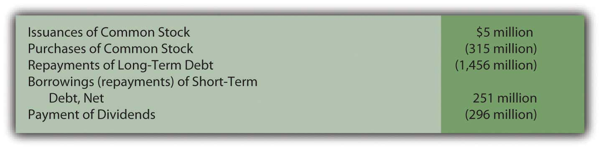
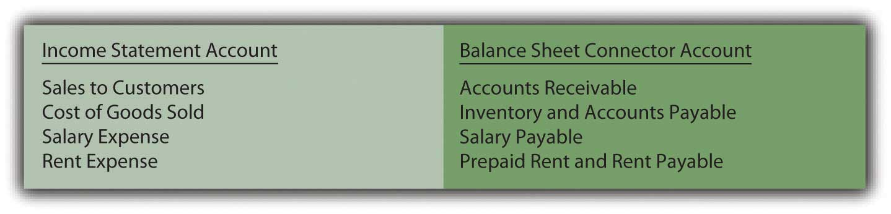
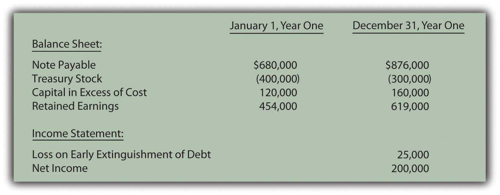

Joe introduces Chapter 17 "In a Set of Financial Statements, What Information Is Conveyed by the Statement of Cash Flows?" and speaks about the course in general.
At the end of this section, students should be able to meet the following objectives:
Question: Thus far in this textbook, the balance sheet and the income statement have been studied in comprehensive detail along with the computation of retained earnings. At this point, a student should be able to access a set of financial statements (on the Internet, for example) and understand much of the reported information. Terms such as “FIFO,” “accumulated depreciation,” “goodwill,” “capital stock,” “bad debt expense,” and the like that might have sounded like a foreign language at the start of this exploration into financial accounting should now have a genuine meaning.
Examination of one last statement is necessary to complete the financial portrait of a reporting entity: the statement of cash flows. This statement was introduced briefly in Chapter 3 "In What Form Is Financial Information Actually Delivered to Decision Makers Such as Investors and Creditors?". Why is it needed by decision makers? What is the rationale for presenting a statement of cash flows? Is it required by U.S. GAAP?
Answer: Coverage of the statement of cash flows has been delayed because the figures presented do not come directly from ending T-account balances found in a business’s general ledger. Instead, the accounts and amounts shown here are derived from the other financial statements. Thus, an understanding of those statements is a helpful prerequisite for the construction of a statement of cash flows.
The delay in examining the statement of cash flows should not be taken as an indication of its lack of significance. In fact, some decision makers view it as the most important of the financial statements. They are able to see how corporate officials managed to get and then make use of the ultimate asset: cash. The acquisition of other assets, the payment of debts, and the distribution of dividends inevitably leads back to a company’s ability to generate sufficient amounts of cash. Consequently, presentation of a statement of cash flows is required by U.S. GAAP for every period in which an income statement is reported.
To reiterate the importance of this information, Michael Dell, founder of Dell Inc., states in his book Direct from Dell: Strategies That Revolutionized an Industry (written with Catherine Fredman): “We were always focused on our profit and loss statement. But cash flow was not a regularly discussed topic. It was as if we were driving along, watching only the speedometer, when in fact we were running out of gas.”Michael Dell with Catherine Fredman, Direct from Dell: Strategies That Revolutionized an Industry (New York: HarperBusiness, 1999), 47.
The income statement and the statement of cash flows connect the balance sheets from the beginning of the year to the end. During the course of that time, total reported net assets either increase or decrease as does the entity’s cash balance. The individual causes of those changes are explained by means of the income statement and the statement of cash flows.
The purpose of the statement of cash flows is virtually self-evident: it reports the cash receipts (cash inflows) and the cash disbursements (cash outflows) to explain the changes taking place during the year in the cash balance. However, the physical structure of this statement is not self-evident. As illustrated in Chapter 3 "In What Form Is Financial Information Actually Delivered to Decision Makers Such as Investors and Creditors?", all cash flows are classified within three distinct categories. Chapter 17 "In a Set of Financial Statements, What Information Is Conveyed by the Statement of Cash Flows?" is designed to demonstrate the logic of this classification system and the method by which the reported numbers are derived.
Question: Because current assets are listed in order of liquidity, most businesses present “cash and cash equivalentsShort-term, highly liquid investments with original maturities of ninety days or fewer that are readily converted into known amounts of cash.” as the first account on their balance sheets. For example, as of December 31, 2008, Ball Corporation reported cash and cash equivalents totaling $127.4 million. The statement of cash flows uses this same terminology as it explains the drop of $24.2 million in Ball’s cash and cash equivalents that took place during 2008. What constitutes cash and what are cash equivalents?
Answer: Cash consists of coins, currencies, bank deposits (both checking accounts and savings accounts) and some negotiable instruments (money orders, checks, and bank drafts). Cash equivalents are short-term, highly liquid investments that are readily convertible into known amounts of cash. They are so near their maturity date that significant changes in value are unlikely. Only securities with original maturities of ninety days or fewer are eligible to be classified as cash equivalents. Cash equivalents held by most companies usually include Treasury bills,A Treasury bill is a popular U.S. government security with a maturity date of one year or less. commercial paper,The term “commercial paper” refers to securities issued by corporations to solve their short-term cash needs. and money market funds.
Going forward, FASB is considering the elimination of the cash equivalents category. Any of these items other than cash will then appear in the financial statements as temporary investments. For simplicity purposes, cash will be used in the examples presented throughout this chapter. However, until the authoritative rules are changed, the accounting for cash equivalents is the same as that for cash.
Link to multiple-choice question for practice purposes: http://www.quia.com/quiz/2093012.html
Question: For reporting purposes all cash flows are classified within one of three categories: operating activities, investing activities, and financing activities. What transactions are specifically identified as operating activities?
Answer: Operating activitiesA statement of cash flow category used to disclose cash receipts and disbursements arising from the primary activities of the reporting organization. generally involve producing and delivering goods and providing services. These events are those that transpire on virtually a daily basis as a result of the organization’s primary function. For a business like Borders, operating activities include the buying and selling of books (and other inventory items) as well as the multitude of other tasks required by that company’s retail function. In simple terms, operating activities are those that are expected to take place regularly in the normal course of business.
Figure 17.1 Typical Operating Activity Cash Inflows and Outflows

The net number (the inflows compared to the outflows) is presented as the cash flows generated from operating activities. This figure is viewed as a good measure of a company’s ability to prosper. Analysts obviously prefer to see a positive number, one that increases from year to year. Some decision makers believe that this figure is a better reflection of a company’s financial health than reported net income because the ultimate goal of a business is to generate cash.
For example, International Paper reported a net loss on its income statement for the year ended December 31, 2008, of $1,282 million (considerably worse than any of the previous five years). However, its statement of cash flows for the same period reported a net cash inflow from operating activities of $2,669 million (considerably better than any of the previous five years). No one could blame a decision maker for being puzzled. Did the company do poorly during 2008 or wonderfully well? That is the problem with relying on only a few of the numbers in a set of financial statements without a closer and more complete inspection. What caused this company to lose over $1.2 billion dollars? How did the company still manage to generate nearly $2.7 billion in cash from its operating activities? In-depth analysis of financial statements is never quick and easy. It requires patience and knowledge and the willingness to dig through all the available information.
Question: On the statement of cash flows for the year ended August 31, 2008, Walgreen Co. reported that a net of over $2.8 billion in cash was spent in connection with a variety of investing activities. This company’s management obviously made decisions that required considerable sums of money. Details about those expenditures should be of interest to virtually any party analyzing this company. What cash transactions are specifically included in investing activities?
Answer: Investing activitiesA statement of cash flow category used to disclose cash receipts and disbursements arising from an asset transaction other than one relating to the primary activities of the reporting organization. encompass the acquisition and disposition of assets in transactions that are separate from the central activity of the reporting organization. These exchanges do not occur daily.
All of these cash transactions involve assets but, if classified as an investing activity, they are only tangentially related to the day-to-day operation of the business.
Figure 17.2 Walgreen Statement of Cash Flows Shows Four Investing Activity Cash Flows for the Year Ended August 31, 2008

Healthy, growing companies normally expect cash flows from investing activities to be negative (a net outflow) as money is invested by management especially in new noncurrent assets. As can be seen here, Walgreen’s spent over $2.2 billion in cash during this one year to buy property and equipment. The company apparently had sufficient cash available to fund this type of significant expansion.
Question: The third category of cash flows lists the amounts received and disbursed in financing activities. For the year ended June 28, 2008, Sara Lee Corporation reported that cash had been reduced by over $1.8 billion as a result of its financing activities. Again, that is a lot of money leaving the company. What cash transactions are specifically identified as financing activities?
Answer: Financing activitiesA statement of cash flow category used to disclose cash receipts and disbursements arising from a liability or stockholders’ equity transaction other than one relating to the primary activities of the organization. relate primarily to liabilities and shareholders’ equity in transactions that are separate from the central, day-to-day activities of the organization. Cash inflows from financing activities usually include issuing capital stock or incurring liabilities such as bonds or notes payable. Outflows are created by the distribution of dividends, the acquisition of treasury stock, the payment of noncurrent liabilities, and the like.
Sara Lee reported five financing activity cash flows for the year ended June 28, 2008. As can be seen in the specific information provided on its statement of cash flows, this company spent nearly $1.5 billion to repay liabilities, another $315 million to repurchase its own stock, and $296 million as dividend payments. Significant information that is readily apparent on this statement.
Figure 17.3 Sara Lee Statement of Cash Flows Shows Five Financing Activity Cash Flows for the Year Ended June 28, 2008
The net result reported for financing activities is frequently positive in some years and negative in others. When a company borrows money or sells capital stock, an overall positive inflow of cash is likely. In years when a large dividend is paid or debt is settled, the net figure for financing activities is more likely to be negative.
Link to multiple-choice question for practice purposes: http://www.quia.com/quiz/2093015.html
Link to multiple-choice question for practice purposes: http://www.quia.com/quiz/2093017.html
Link to multiple-choice question for practice purposes: http://www.quia.com/quiz/2092974.html
Question: Significant investing and financing transactions occasionally occur without a cash component. Land, for example, might be obtained by issuing common stock. Buildings are often bought through the signing of a long-term note payable so that cash payments are deferred into the future. Should that information be omitted from the statement of cash flows? If no cash is received or expended, should a transaction be reported on a statement of cash flows?
Answer: All investing and financing transactions need to be reported in some manner for the benefit of decision makers. They represent choices made by the organization’s management. If cash is not involved, such events must still be disclosed in a separate schedule (often just below the statement of cash flows) or explained in the notes to the financial statements. This information is valuable to interested parties who want a complete picture of the decisions made during the reporting period.
For example, in a note to its financial statements for the year ended April 24, 2009, NetApp Inc. disclosed the “acquisition of property and equipment on account” of $13,152,000. Although a noncash transaction, inclusion of the information was still important.
Stock dividends and stock splits, though, are omitted entirely in creating a statement of cash flows. As discussed in the previous chapter, they are viewed as merely techniques to reduce the price of a corporation’s stock and are not decisions that impact the allocation of resources.
A statement of cash flows is required by U.S. GAAP whenever an income statement is presented. It explains the changes occurring in cash and cash equivalents during the reporting period. All the various cash inflows and outflows are classified into one of three categories. Operating activities result from the primary or central function of the business. Investing activities are nonoperating and affect an asset (such as the acquisition of a truck or the sale of a patent). Financing activities are nonoperating and involve a liability or a stockholders’ equity account (borrowing money on a note, for example, or the acquisition of treasury stock). Investing and financing activities that do not impact cash must still be disclosed.
At the end of this section, students should be able to meet the following objectives:
Question: The net cash inflow or outflow generated by operating activities is especially significant information to any person looking at an organization’s financial health and future prospects. According to FASB, that information can be presented within the statement of cash flows by either of two approaches: the direct methodA mechanical method of reporting the amount of cash flows that a company generates from its operating activities; it is preferred by FASB because the information is easier to understand but it is only rarely encountered in practice. or the indirect methodA mechanical method of reporting the amount of cash flows that a company generates from its operating activities; it is allowed by FASB (although the direct method is viewed as superior) but it is used by a vast majority of businesses in the United States.. The numerical amount of the change in cash resulting from the company’s daily operations is not impacted by this reporting choice. The increase or decrease in cash is a fact that will not vary based on the manner of presentation. Both methods arrive at the same total. The informational value to decision makers, though, is potentially affected by the approach selected.
FASB has indicated a preference for the direct method. In contrast, reporting companies (by an extremely wide margin) have continued to use the more traditional indirect method. Thus, both will be demonstrated here. The direct method seems a bit easier to explain and will be discussed first. How is information presented when the direct method is selected to disclose a company’s cash flows from operating activities?
Answer: The direct method starts with the income statement for the period. Then, each of the separate figures is converted into the amount of cash received or spent in carrying on operating activities. “Sales,” for example, is turned into “cash collected from customers.” “Salary expense” and “rent expense” are recomputed as “cash paid to employees” and “cash paid to rent facilities.”
For illustration purposes, assume that that Liberto Company prepared the following income statement for the year ended December 31, Year One. This statement has been kept rather simple so that the conversion to cash flows from operating activities is not unnecessarily complex. For example, income tax expense has been omitted.
Figure 17.4 Liberto Company Income Statement Year Ended December 31, Year One

The $100,000 net income figure reported here by Liberto is based on the application of U.S. GAAP. However, the amount of cash generated by the company’s operating activities might be considerably more or much less than that income figure. It is a different piece of information.
To transform a company’s income statement into its cash flows from operating activities, three distinct steps must be taken. The first step is the complete elimination of any income statement account that does not involve cash. Although such balances are important in arriving at net income, they are not relevant to the cash generated and spent in connection with operations. By far the most obvious example is depreciation. This expense appears on virtually all income statements but has no purpose when cash flows are being determined. It is omitted because depreciation is neither a source nor use of cash. It is an allocation of a historical cost to expense over an asset’s useful life. For Liberto, the $80,000 depreciation expense is removed to begin the process of arriving at cash flows from operating activities.
The second step is the removal of any gains and losses that have resulted from investing or financing activities. Although cash was probably involved, this inflow or outflow is reported elsewhere in the statement of cash flows and not within the company’s operating activities. For example, Liberto’s $40,000 gain on the sale of equipment is germane to the reporting of investing activities, not operating activities. The cash received in this disposal is included on the statement of cash flows but as an investing activity.
Neither noncash items such as depreciation nor nonoperating gains and losses are included when an income statement is converted to the cash flows from operating activities.
Question: After these two balances are deleted, Liberto is left with four income statement accounts:
These balances all relate to operating activities. However, the numbers reflect the application of U.S. GAAP and accrual accounting rather than the amount of cash exchanged. The cash effects must be determined individually for these accounts. How are income statement figures such as sales or rent expense converted into the amount of cash received or expended?
Answer: For all the remaining income statement accounts, a difference usually exists between the time of recognition as specified by accrual accounting and the exchange of cash. A sale is made on Monday (revenue is recognized) but the money is not collected until Friday. An employee performs work on Monday (expense is recognized) but payment is not made until Friday.
These timing differences occur because accrual accounting is required by U.S. GAAP. Thus, many revenues and expenses are not recorded at the same time as the related cash transactions. In the interim, recognition of an asset or liability balance is necessary. Between the sale on Monday and the collection on Friday, the business reports an account receivable. This asset goes up when the sale is made and down when the cash is collected. Between the employee’s work on Monday and the payment on Friday, the business reports a salary payable. This liability goes up when the money is earned and down when the cash payment is made. In this textbook, these interim accounts (such as accounts receivable and salary payable) will be referred to as “connector accounts” because they connect the accrual recording with the cash transaction.
Each income statement account (other than the noncash and nonoperating numbers that have already been eliminated) has at least one asset or liability that is recorded between the time of accounting recognition and the exchange of cash. The changes in these connector accounts are used to convert the individual income statement figures to their cash equivalents. Basically, the increase or decrease is removed to revert the reported number back to the amount of cash involved.
Connector accounts are mostly receivables, payables, and prepaid expenses. For example, see Figure 17.5 "Common Connector Accounts for Liberto’s Four Income Statement Balances".
Figure 17.5 Common Connector Accounts for Liberto’s Four Income Statement BalancesFor convenience, the allowance for doubtful accounts will not be included with accounts receivable. The possibility of bad debts makes the conversion to cash more complicated and is covered in upper-level accounting textbooks.
If a connector account is an asset and the balance goes up, the business has less cash (the receivable was not collected, for example). If a connector account is an asset and it goes down, the business has more cash (receivables from previous years were collected in the current period). For a connector account that is an asset, an inverse relationship exists between the change in the balance during the year and the reporting entity’s cash balance.
If a connector account is a liability and the balance goes up, the business has saved its cash and holds more (an expense has been incurred but not yet paid, for example). If a connector account is a liability and this balance falls, the business must have used cash to reduce the debt and has less remaining. Consequently, a direct relationship exists between the change in a connector account that is a liability and the cash balance.
Question: Liberto has one revenue and three expenses left on its income statement. To arrive at the net cash flows from operating activities, the cash inflow or outflow relating to each must be determined. Assume that the following changes took place during this year in the related connector accounts:
In applying the direct method to determine operating activity cash flows, how are the individual figures to be disclosed computed?
Answer:
Cost of goods sold has been left to last because it requires an extra step. The company first determines the quantity of inventory bought this period. Only then can the cash payment made for those acquisitions be determined.
Figure 17.6 Liberto Company Statement of Cash Flows for Year One, Operating Activities Reported by Direct Method

Liberto’s income statement reported net income of $100,000. However, the cash generated by operating activities during this same period was $133,000. The conversion from accrual accounting to operating cash inflows and outflows required three steps.
Links to multiple-choice question for practice purposes: http://www.quia.com/quiz/2093018.html
Links to multiple-choice question for practice purposes: http://www.quia.com/quiz/2092993.html
Links to multiple-choice question for practice purposes: http://www.quia.com/quiz/2092995.html
Links to multiple-choice question for practice purposes: http://www.quia.com/quiz/2092975.html
An entity’s cash flows from operating activities can be derived and reported by either the direct method or the indirect method. FASB expressed preference for the direct method but the indirect method is used by most businesses in the United States. The process begins with the income for the period (the entire income statement for the direct method but just net income for the indirect method). Noncash items and nonoperating gains and losses are eliminated entirely. In the direct method, the remaining revenue and expense accounts are individually converted into cash figures. For each, the change in one or more related balance sheet connector accounts is taken into consideration. Thus, the reported U.S. GAAP (accrual accounting) figures can be turned into the underlying cash inflows and outflows for reporting purposes.
At the end of this section, students should be able to meet the following objectives:
Question: As mentioned, most organizations do not choose to present their operating activity cash flows using the direct method despite preference by FASB. Instead, this information is shown within a statement of cash flows by means of the indirect method. How does the indirect method of reporting operating activity cash flows differ from the direct method?
Answer: The indirect method actually follows the same set of procedures as the direct method except that it begins with net income rather than the business’s entire income statement. After that, the three steps demonstrated previously are followed although the mechanical process here is different.
Question: In the income statement presented above for the Liberto Company, net income was reported as $100,000. That included depreciation expense (a noncash item) of $80,000 and a gain on the sale of equipment (an investing activity rather than an operating activity) of $40,000. In applying the indirect method, how are noncash items and nonoperating gains and losses removed from net income?
Answer: Depreciation is an expense and, hence, a negative component of net income. To eliminate a negative, it is offset by a positive. Adding back depreciation serves to remove its impact from the reporting company’s net income.
The gain on sale of equipment also exists within reported income but as a positive figure. It helped increase profits this period. To eliminate this gain, the $40,000 amount must be subtracted. The cash flows resulting from this transaction came from an investing activity and not an operating activity.
In applying the indirect method, a negative is removed by addition; a positive is removed by subtraction.
Figure 17.7 Operating Activity Cash Flows, Indirect Method—Elimination of Noncash and Nonoperating Balances

In the direct method, these two amounts were simply omitted in arriving at the individual cash flows from operating activities. In the indirect method, they are both physically removed from income by reversing their effect. The impact is the same in the indirect method as in the direct method.
Question: After all noncash and nonoperating items are removed from net income, only the changes in the balance sheet connector accounts must be utilized to complete the conversion to cash. For Liberto, those balances were shown previously.
Each of these increases and decreases was used in the direct method to turn accrual accounting figures into cash balances. That same process is followed in the indirect method. How are changes in an entity’s connector accounts reflected in the application of the indirect method?
Answer: Although the procedures appear to be different, the same logic is applied in the indirect method as in the direct method. The change in each of these connector accounts has an impact on the cash amount and it can be logically determined. However, note that the effect is measured on the net income as a whole rather than on individual revenue and expense accounts.
Accounts receivable increased by $19,000. This rise in the receivable balance shows that less money was collected than the sales made during the period. Receivables go up because customers are slow to pay. This change results in a lower cash balance. Thus, the $19,000 should be subtracted in arriving at the cash flow amount generated by operating activities. The cash received was actually less than the figure reported for sales within net income. Subtract $19,000.
Inventory decreased by $12,000. A drop in the amount of inventory on hand indicates that less was purchased during the period. Buying less merchandise requires a smaller amount of cash to be paid. That leaves the balance higher. The $12,000 should be added. Add $12,000.
Prepaid rent increased by $4,000. An increase in any prepaid expense shows that more of the asset was acquired during the year than was consumed. This additional purchase requires the use of cash; thus, the balance is lowered. The increase in prepaid rent necessitates a $4,000 subtraction in the operating activity cash flow computation. Subtract $4,000.
Accounts payable increased by $9,000. Any jump in a liability means that Liberto paid less cash during the period than the debts that were incurred. Postponing liability payments is a common method for saving cash and keeping the reported balance high. The $9,000 should be added. Add $9,000.
Salary payable decreased by $5,000. Liability balances fall when additional payments are made. Those cash transactions are reflected in applying the indirect method by a $5,000 subtraction. Subtract $5,000.
Therefore, if Liberto Company uses the indirect method to report its cash flows from operating activities, the information will take the following form.
Figure 17.8 Liberto Company Statement of Cash Flows for Year One, Operating Activities Reported by Indirect Method

As with the direct method, the final total is a net cash inflow of $133,000. In both cases, the starting spot was net income (either as a single number or the income statement as a whole). Then, any noncash items were removed as well as nonoperating gains and losses. Finally, the changes in the connector accounts that bridge the time period between U.S. GAAP recognition and the cash exchange are determined and included so that only cash from operating activities remains. The actual cash increase or decrease is not affected by the presentation of this information.
In reporting operating activity cash flows by means of the indirect method, the following pattern exists.
A quick visual comparison of the direct method and the indirect method can make the two appear almost completely unrelated. However, when analyzed, the same steps are incorporated in each. They both begin with the income for the period. Noncash items and nonoperating gains and losses are removed. Changes in the connector accounts for the period are factored in so that only the cash from operations remains.
Link to multiple-choice question for practice purposes: http://www.quia.com/quiz/2092976.html
Link to multiple-choice question for practice purposes: http://www.quia.com/quiz/2092977.html
Question: When reporting cash flows from operating activities for the year ended December 31, 2008, EMC Corporation listed an inflow of over $240 million labeled as “dividends and interest received” as well as an outflow of nearly $74 million shown as “interest paid.”
Unless a company is a bank or financing institution, dividend and interest revenues do not appear to relate to its central operating function. For most businesses, these inflows are fundamentally different from the normal sale of goods and services. Monetary amounts collected as dividends and interest resemble investing activity cash inflows because they are usually generated from noncurrent assets. Similarly, interest expense is an expenditure normally associated with noncurrent liabilities rather than resulting from daily operations. It could be argued that it is a financing activity cash outflow.
Why is the cash collected as dividends and interest and the cash paid as interest reported within operating activities on a statement of cash flows rather than investing activities and financing activities?
Answer: Authoritative pronouncements that create U.S. GAAP are the subject of years of intense study, discussion, and debate. In this process, controversies often arise. When FASB Statement 95, Statement of Cash Flows, was issued in 1987, three of the seven board members voted against its passage. Their opposition, at least in part, came from the handling of interest and dividends. On page ten of that standard, they argue “that interest and dividends received are returns on investments in debt and equity securities that should be classified as cash inflows from investing activities. They believe that interest paid is a cost of obtaining financial resources that should be classified as a cash outflow for financing activities.”
The other board members were not convinced. Thus, inclusion of dividends collected, interest collected, and interest paid within an entity’s operating activities became a part of U.S. GAAP. Such disagreements arise frequently in the creation of official accounting rules.
The majority of the board apparently felt that—because these transactions occur on a regular ongoing basis—a better portrait of the organization’s cash flows is provided by including them within operating activities. At every juncture of financial accounting, multiple possibilities for reporting exist. Rarely is complete consensus ever achieved as to the most appropriate method of presenting financial information.
Following is the conclusion of our interview with Robert A. Vallejo, partner with the accounting firm PricewaterhouseCoopers.
Question: Any company that follows U.S. GAAP and issues an income statement must also present a statement of cash flows. Cash flows are classified as resulting from operating activities, investing activities, or financing activities. Are IFRS rules the same for the statement of cash flows as those found in U.S. GAAP?
Rob Vallejo: Differences do exist between the two frameworks for the presentation of the statement of cash flows, but they are relatively minor. Probably the most obvious issue involves the reporting of interest and dividends that are received and paid. Under IFRS, interest and dividend collections may be classified as either operating or investing cash flows whereas, in U.S. GAAP, they are both required to be shown within operating activities. A similar difference exists for interest and dividends payments. These cash outflows can be classified as either operating or financing activities according to IFRS. For U.S. GAAP, interest payments are viewed as operating activities whereas dividend payments are considered financing activities. As is common in much of IFRS, more flexibility is available.
Most reporting entities use the indirect method to report cash flows from operating activities. This presentation begins with net income and then eliminates any noncash items (such as depreciation expense) as well as nonoperating gains and losses. Their impact on net income is reversed to create this removal. The changes in balance sheet connector accounts for the year (such as accounts receivables, inventory, accounts payable, and salary payable) must also be taken into consideration in converting from accrual accounting to cash. An analysis is made of the effect on both cash and net income in order to make the proper adjustments. Cash transactions that result from interest revenue, dividend revenue, and interest expense are all left within operating activities because they happen regularly. However, some argue that interest and dividend collections are really derived from investing activities and interest payments relate to financing activities.
At the end of this section, students should be able to meet the following objectives:
Question: For the year ended September 27, 2008, The Walt Disney Company reported the net outflow of over $2.1 billion in cash as a result of its investing activities during that period (all numbers in millions):
Figure 17.9 The Walt Disney Company Investing Activity Cash Flows for Year Ended September 27, 2008
This portion of Disney’s statement of cash flows shows that a number of nonoperating asset transactions created this $2.1 billion reduction in cash. Information about management decisions is readily available. For example, a potential investor can see that officials chose to spend cash of almost $1.6 billion during this year in connection with Disney’s parks, resorts and other property. Interestingly, this expenditure level is almost exactly the same as the monetary amount invested in those assets in the previous year. With knowledge of financial accounting, a portrait of a business and its activities begins to become clear.
After the cash amounts are determined, conveyance of this information does not appear particularly complicated. How does a company arrive at the investing activity figures that are disclosed within the statement of cash flows?
Answer: In most cases, an accountant takes the ledger account for each nonoperating asset (land, buildings, equipment, patents, trademarks, and the like) and investigates the individual transactions that took place during the year. The amount of every cash change is identified and reported. A cash sale of land creates an inflow whereas the acquisition of a building probably requires the payment of some cash.
The difficulty in this process can come from having to sort through multiple purchases and sales to compute the exact amount of cash involved in each transaction. At times, determining these cash effects resembles the work required to solve a puzzle with many connecting pieces. Often, the accountant must replicate the journal entries that were made originally. Even then, the cash portion of these transactions may have to be determined by mathematical logic. To illustrate, assume that a company reports the following account balances.
Figure 17.10 Account Balances for Illustration Purposes

In looking through business records for Year One, assume that the accountant finds two additional pieces of information about the above accounts:
Sale of equipment. This transaction is analyzed first because the cost of the equipment is already provided. However, the accumulated depreciation relating to the disposed asset is not known. The accountant must study the available data to determine that missing number because that balance is also removed when the asset is sold.
Accumulated depreciation at the start of the year was $300,000 but depreciation expense of $230,000 was then reported as shown above. This expense was recognized through the following year-end adjustment.
Figure 17.11 Assumed Adjusting Entry for Depreciation

The entry here increases the accumulated depreciation account to $530,000 ($300,000 plus $230,000). However, the end balance is not $530,000 but only $450,000. What caused the $80,000 drop in this contra asset account?
Accumulated depreciation represents the cost of a long-lived asset that has already been expensed. Virtually the only situation in which accumulated depreciation is reduced is the disposal of the related asset. Here, the accountant knows that equipment was sold. Although the amount of accumulated depreciation relating to that asset is unknown, the assumption can be made that it is equal to this reduction of $80,000. No other possible decrease in accumulated depreciation is mentioned.
Thus, the accountant believes equipment costing $600,000 but with accumulated depreciation of $80,000 (and, hence, a net book value of $520,000) was sold for an amount resulting in the $74,000 gain that is shown in the reported figures presented above.
A hypothetical journal entry can be constructed from this information.
Figure 17.12 Assumed Journal Entry for Sale of Equipment
This journal entry only balances if the cash received is $594,000. Equipment with a book value of $520,000 was sold during the year at a reported gain of $74,000. Apparently, $594,000 was received. How does all of this information affect the statement of cash flows?
Purchase of equipment. According to the information provided, another asset was acquired this year but its cost is unavailable. Once again, the accountant must puzzle out the amount of cash involved in the transaction.
The equipment account began the year with a $730,000 balance. The sale of equipment costing $600,000 was just discussed. This transaction should have dropped the ledger account total to $130,000 ($730,000 less $600,000). However, at the end of the period, the balance reported for this asset is actually $967,000. How does the cost of equipment grow from $130,000 to $967,000? If no other transaction is mentioned, the most reasonable explanation is that equipment was acquired at a cost of $837,000 ($967,000 less $130,000). Unless information is available indicating that part of this purchase was made on credit, the journal entry that was recorded originally must have been as follows.
Figure 17.13 Assumed Journal Entry for Purchase of Equipment

At this point, the changes in all related accounts (equipment, accumulated depreciation, depreciation expense, and gain on sale of equipment) have been utilized to determine the two transactions for the period and the cash inflows and outflows. In the statement of cash flows for this company, the investing activities are listed as follows.
Figure 17.14 Statement of Cash Flows Investing Activities

Link to multiple-choice question for practice purposes: http://www.quia.com/quiz/2093020.html
Link to multiple-choice question for practice purposes: http://www.quia.com/quiz/2093022.html
Link to multiple-choice question for practice purposes: http://www.quia.com/quiz/2093000.html
Question: For the year ended December 28, 2008, Johnson & Johnson reported a net cash outflow from financing activities of over $7.4 billion. Within its statement of cash flows, that total was broken down into seven specific categories (all numbers in millions).
Figure 17.15 Financing Activity Cash Flows Reported by Johnson & Johnson for Year Ended December 28, 2008
In preparing a statement of cash flows, how does a company such as Johnson & Johnson determine the amounts that were paid and received as a result of its various financing activities?
Answer: As has been indicated, financing activities reflect transactions that are not part of a company’s central operations and involve either a liability or a stockholders’ equity account. Johnson & Johnson paid over $5 billion in cash dividends and nearly $6.7 billion to repurchase common stock (treasury shares). During the same period, approximately $8.4 billion in cash was received from borrowing money on short-term debt and another $1.6 billion from long-term debt. None of these amounts are directly associated with the company’s operating activities. However, they do involve liabilities or stockholders’ equity and are appropriately reported as financing activities.
The procedures used in determining cash amounts to be reported as financing activities are the same as demonstrated for investing activities. The change in each nonoperating liability and stockholders’ equity account is analyzed. The recording of individual transactions can be replicated so that the cash effect is isolated.
To illustrate, various account balances for the Hastings Corporation are presented in the following schedule.
Figure 17.16 Account Balances for Illustration Purposes
In examining records for the Hastings Corporation for this year, the accountant finds several additional pieces of information:
Once again, the various changes in each account balance can be analyzed to determine the cash flows, this time to be reported as financing activities.
Borrowing on note payable. Complete information about this transaction is available. Hastings Corporation received $400,000 in cash by signing a note payable with a bank. The journal entry to record the incurrence of this liability is assumed to be as follows.
Figure 17.17 Assumed Journal Entry for Signing of Note Payable

On a statement of cash flows, this transaction is listed within the financing activities as a $400,000 cash inflow.
Paying note payable. Incurring the above $400,000 debt raises the note payable balance from $680,000 to $1,080,000. By the end of the year, this account only shows a total of $876,000. Reported notes payable have decreased in some way by $204,000 ($1,080,000 less $876,000). The information gathered by the accountant indicates that a debt was paid off this year prior to maturity. In addition, the general ledger reports a $25,000 loss on the early extinguishment of a debt. Once again, the journal entry for this transaction can be recreated by logical reasoning.
Figure 17.18 Assumed Journal Entry for Extinguishment of Debt

To balance this entry, cash of $229,000 must have been paid. Spending this amount to settle a $204,000 liability does create the $25,000 reported loss. This cash outflow of $229,000 relates to a liability and is thus listed on the statement of cash flows as a financing activity.
Issuance of treasury stock. This equity balance reflects the cost of repurchased shares. During the year, the total in the T-account fell by $100,000 from $400,000 to $300,000. Apparently, $100,000 was the cost of the shares reissued to the public. At the same time, the capital in excess of cost balance rose from $120,000 to $160,000. That $40,000 increase in contributed capital must have been created by this sale. The shares were sold for more than their purchase price.
Figure 17.19 Assumed Journal Entry for Sale of Treasury Stock

If the original cost of the treasury stock was $100,000 and an amount $40,000 in excess of cost was recorded, the cash inflow from this transaction was $140,000. Cash received from the issuance of treasury stock is reported as a financing activity of $140,000 because it relates to a stockholders’ equity account.
Distribution of dividend. A dividend has been paid but the amount is not shown in the information provided. Net income was reported as $200,000. Those profits always increase retained earnings. As a result, the beginning balance of $454,000 should increase to $654,000. Instead, retained earnings only rose to $619,000 by the end of the year. The unexplained drop of $35,000 ($654,000 less $619,000) must have resulted from the payment of the dividend. No other possible reason is given for this reduction. Hence, a cash dividend distribution of $35,000 is shown within the statement of cash flows as a financing activity.
Figure 17.20 Assumed Journal Entry for Payment of Dividend

In this example, four specific financing activity transactions have been identified as created changes in cash.
Figure 17.21 Statement of Cash Flows Financing Activities
All the sources and uses of this company’s cash (as it related to financing activities) are apparent from this schedule. Determining the cash amounts can take some computation but the information is then clear and useful.
Link to multiple-choice question for practice purposes: http://www.quia.com/quiz/2093001.html
Link to multiple-choice question for practice purposes: http://www.quia.com/quiz/2093002.html
To determine cash flows from investing activities, the accountant must analyze the changes that have taken place in each nonoperational asset such as buildings and equipment. Journal entries can be recreated to show the amount of any cash inflow or cash outflow. For financing activities, a similar process is applied to each nonoperational liability (notes and bonds payable, for example) and stockholders’ equity accounts. Once all changes in these accounts have been determined, the statement of cash flows can be produced.
Following is the conclusion of our interview with Kevin G. Burns.
Question: Many investors watch the movement of a company’s reported net income and earnings per share and make investment decisions based on increases or decreases. Other investors argue that the amount of cash flows generated by operating activities is really a more useful figure. When you make investing decisions are you more inclined to look at net income or cash flows generated by operating activities?
Kevin Burns: As I have said previously, net income and earnings per share have a lot of subjectivity to them. Unfortunately, cash flow information can be badly misused also. A lot of investors seem fascinated by EBITDA which is the company’s earnings before interest, taxes, depreciation, and amortization. I guess you could say that it is kind of like blending net income and cash flows. But, to me, interest and taxes are real cash expenses so why exclude them? The biggest mistake I ever made as an investor or financial advisor was putting too much credence in EBITDA as a technique for valuing a business. Earnings are earnings and that is important information. A lot of analysts now believe that different cash flow models should be constructed for different industries. If you look around, you can find cable industry cash flow models, theater cash flow models, entertainment industry cash flow models, and the like. I think that is a lot of nonsense. You have to obtain a whole picture to know if an investment is worthwhile. While cash generation is important in creating that picture so are actual earnings and a whole lot of other financial information.
Question: The three sections of the statement of cash flows have been presented in this chapter but in separate coverage. Now, through a comprehensive illustration, these categories will be combined into a formal and complete statement.
The following information has been uncovered within the internal records maintained by the Ashe Corporation for the Year 2XX1. The company is a small organization that was incorporated several years ago in the western part of North Carolina.
A few of the significant financial events that occurred during the current year are as follows:
Ashe Corporation is now attempting to prepare its first complete set of financial statements as part of an application for a new loan. Company officials have created the following informal balance sheets and income statement.
Figure 17.22 Ashe Corporation—2XX1 Beginning and Ending Balance Sheets

Figure 17.23 Ashe Corporation—Income Statement for Year Ended December 31, 2XX1
A statement of cash flows now needs to be created for the Ashe Corporation. As shown in the balance sheet, cash increased from $1,000 to $27,000 during the course of this year. That $26,000 change should be explained. How does a company construct an entire statement of cash flows? Application of the indirect method for presenting operating activities is so prevalent that company officials have decided to use it.
Answer:
In both the direct and indirect methods, cash flows from operating activities are derived by following several specific steps:
Convert the remaining revenue and expense balances from accrual accounting to cash accounting by adjusting for the changes occurring during the year in related connector accounts.
Figure 17.24 Ashe Corporation—Change in Connector Accounts

The change in each of these six connector accounts—accounts receivable, inventory, accounts payable, wages payable, interest payable, and taxes payable—must be factored into the computation of cash flows from operating activities to arrive at the actual effect on cash for the period.
Accounts receivable—increase of $15,000. The receivables balance rises because more sales are made on credit than cash is collected. The reduction in the cash received causes the receivable to go up. This decrease in cash collections is reflected by subtracting the $15,000 from net income.
Inventory—decrease of $4,000. The inventory balance dropped, which indicates that less inventory was bought than was sold this year. Fewer purchases take less money, keeping the cash balance high. The decrease in inventory and its impact on cash are reported by an addition to net income.
Accounts payable—increase of $4,000. Liabilities increase because more debt is acquired than the amount of cash paid. Slowness of payment increases accounts payable but also helps keep the company’s cash balance high. This increase in accounts payable must be added to net income to arrive at the cash flows from operating activities.
Wages payable—increase of $3,000 and interest payable—increase of $1,000. Both of these accrued liabilities went up during this year. Once again, an increase in a liability indicates a reduction in payments. This saving of cash is shown within the indirect method by adding the increases in wages payable and interest payable to net income.
Taxes payable—decrease of $1,000. A liability goes down because of cash payments that reduce the obligation. However, they also shrink the amount of cash held. This effect is mirrored by subtracting the decrease in the liability from net income.
The steps for determining cash flows generated by operating activities have been completed (using the indirect method) and this part of the statement of cash flows can be prepared.
Figure 17.25 Ashe Corporation Cash Flows from Operating Activities for Year Ended December 31, 2XX1—Indirect Method

As can be seen here, cash generated by operating activities ($131,000) is considerably higher than the net income reported for the period ($40,000). That is not uncommon in the world of business especially since depreciation is often a large expense that does not require cash.
After accounting for operating activities, only three asset accounts remain to be examined (along with their accumulated depreciation balances where appropriate): land, buildings, and equipment. The accountant looks at each individually and attempts to recreate the transactions that brought about the various changes during the year.
Land decreased by $7,000 ($21,000 to $14,000). The information provided states that land costing $7,000 was sold but does not indicate the amount of cash received in the exchange. However, the income statement discloses a $5,000 loss on the sale of land. When land costing $7,000 is sold at a $5,000 loss, only $2,000 in cash is received. The journal entry recorded by Ashe Corporation must have been as follows.
Figure 17.26 Assumed Journal Entry for Sale of Land
Land is an asset so this inflow of cash will be reported as an investing activity.
Buildings increased by $30,000 ($390,000 to $420,000). According to the introductory information, one building with a cost of $230,000 and a net book value of $200,000 (related accumulated depreciation was identified as $30,000) was sold during this year for $210,000. Those amounts create the $10,000 gain that appears in the company’s income statement.
Figure 17.27 Assumed Journal Entry for Sale of Building
This transaction will be listed as a cash inflow within investing activities. However, the change in the buildings account is not yet fully explained. The above sale drops that account from $390,000 to $160,000 (a $230,000 reduction in cost). The final balance for the year was not $160,000 but rather $420,000, an increase of $260,000. Without mention of additional transactions, the assumption is made that another building was acquired during the period at that price.
Figure 17.28 Assumed Journal Entry for Purchase of Building

This second building transaction is also included within the investing activities but as a cash outflow.
Equipment increased by $14,000 ($36,000 to $50,000). The provided information states that one piece of equipment was purchased during the year for $44,000. This transaction identifies another cash outflow to be reported.
Figure 17.29 Assumed Journal Entry for Purchase of Equipment

This journal entry does not entirely explain the change that occurred in the equipment account. The beginning balance of $36,000 grew to $80,000 as a result of this purchase. Yet, the ending balance was just $50,000. Another $30,000 reduction ($80,000 less $50,000) took place. Equipment accounts decrease as the result of a sale or some other type of disposal. The $30,000 is the cost of equipment that was sold this period.
In recording the disposal of a long-lived asset, removal of any related accumulated depreciation is also necessary. For the equipment reported by Ashe Corporation, beginning accumulated depreciation was $17,000—a figure that increased by $30,000 due to depreciation for that year (to a balance of $47,000). Ending accumulated depreciation account shows a balance of only $20,000. The apparent reduction of $27,000 ($47,000 less $20,000) must have been the amount relating to the equipment that was sold. That was the accumulated depreciation removed in recording the disposal of this asset.
Because no gain or loss is reported in the income statement on the disposal of equipment, the amount received must have been equal to the $3,000 net book value of the asset ($30,000 less $27,000).
Figure 17.30 Assumed Journal Entry for Sale of Equipment

All the changes in the land, buildings, and equipment accounts have now been examined. Each individual transaction was recreated and the change in cash calculated. The investing activity section of the statement of cash flows is prepared as follows.
Figure 17.31 Ashe Corporation Cash Flows from Investing Activities for Year Ended December 31, 2XX1
Only three accounts remain unexamined: notes payable, capital stock, and retained earnings. They are all either liabilities or stockholders’ equity accounts and, thus, lead to financing activities.
Notes payable increased by $10,000 ($120,000 to $130,000). The information gathered from the company disclosed the signing of a note payable for $110,000 in cash. This first transaction is obviously an inflow of that amount of cash.
Figure 17.32 Assumed Journal Entry for Signing of Note Payable

According to the beginning and ending balance sheets, notes payable did not increase by $110,000 but only by $10,000. Thus, another transaction must have taken place that reduced this liability by $100,000. Notes payable decrease because of cash payments. Because no gain or loss on extinguishment of debt is reported in the income statement, Ashe Corporation must have paid exactly $100,000 to retire that same amount of debt.
Figure 17.33 Assumed Journal Entry for Extinguishment of Note Payable
The recording of this second transaction leads to the appropriate change in notes payable ($10,000 increase created by a $110,000 liability increase and a $100,000 decrease). It also uncovers another cash flow from financing activities: the $100,000 that was paid on the liability.
Capital stock increased by $5,000 ($50,000 to $55,000). The information states that Ashe Corporation issued stock to an investor for $5,000. That contribution created this account change.
Figure 17.34 Assumed Journal Entry for Issuance of Capital Stock
The business received this money and must report a financing activity cash inflow of $5,000. No other stock transactions are indicated.
Retained earnings increased by $9,000 ($140,000 to $149,000). This final balance sheet account increased by $40,000 because of the net income earned by Ashe Corporation this year. This amount is closed into retained earnings at the end of the year. The cash flows relating to net income have already been presented above within operating activities.
Retained earnings must have also declined by $31,000 to create the overall change of $9,000. As mentioned previously, other than net income, retained earnings are changed by virtually only one other event: the distribution of dividends. The information mentions that a dividend was paid this year and must have made up this $31,000 difference. Net income of $40,000 and a dividend of $31,000 do arrive at the reported increase in retained earnings of $9,000.
Figure 17.35 Assumed Journal Entry for Payment of Cash Dividend

With this final financing activity, the entire statement of cash flows can be created for the Ashe Corporation. All the transactions that affected cash during the year are included so that investors and other interested parties can gain a picture of the results of operations as well as the investing and financing decisions of management. This picture is an excellent complement to the income statement, statement of retained earnings, and balance sheet.
Figure 17.36 Ashe Corporation Statement of Cash Flows Year Ended December 31, 2XX1

Joe talks about the five most important points in Chapter 17 "In a Set of Financial Statements, What Information Is Conveyed by the Statement of Cash Flows?".
Where would cash collected from customers appear on the statement of cash flows?
Fritz Corporation began the year with $900,000 in accounts receivable. During the year, revenue totaled $7,000,000. Fritz ended the year with $750,000 in accounts receivable. How much cash did Fritz collect from customers during the year?
Where would the redemption of bonds payable appear on the statement of cash flows?
During the year, Rafael Corporation paid dividends of $23,000, received cash by signing a note payable of $105,000, purchased a piece of equipment for $29,400 and received dividend income of $12,000. What would be Rafael’s cash flow from financing activities for the year?
Happy Toy Company began 20X9 with $1,000 in inventory and $4,500 in accounts payable. During the year, Happy Toy incurred cost of goods sold of $25,000. Happy Toy ended 20X9 with $2,700 in inventory and $3,800 in accounts payable. How much cash did Happy Toy pay for purchases during 20X9?
Where would the purchase of available for sale securities appear on the statement of cash flows?
Crystal Bell Company generated $48,900 in net income during the year. Included in this number are a deprecation expense of $13,000 and a gain on the sale of equipment of $4,000. In addition, accounts receivable increased by $16,000, inventory decreased by $5,090, accounts payable decreased $4,330 and interest payable increased $1,200. Based on the above information, what would Crystal Bell’s cash flow from operations using the indirect method?
Transportation Inc. incurred rent expense of $98,000 during the year. Prepaid rent increased by $34,000 during the year. How much cash did Transportation pay for rent during the year?
Use the following abbreviations to indicate in which section of the statement of cash flows you would find each item below.
O = Operating Section
I = Investing Section
F = Financing Section
Whitmore Corporation had cost of goods sold of $4,793,000 during the year. Whitmore had the following account balances at the beginning and end of the year.
Figure 17.37 Change in Inventory and Account Payable Balances

What amount of cash did Whitmore pay for inventory purchases this year?
Jamison Company’s income statement for 20X6 is below.
Figure 17.38 Jamison Company Income Statement as of 12/31/X6

Figure 17.39 Selected Balance Sheet Accounts from the Beginning and End of 20X6

Determine Jamison’s cash flow from operations using both the direct and indirect methods.
Killian Corporation had several transactions during the year that impacted long-term assets and liabilities and owners’ equity. Determine if each of the following items would be shown in investing activities, financing activities or neither.
Figure 17.40 Determination of Cash Flow Balances
Ruthers Corporation began business on January 1, 20X5. The financial statements for Ruthers’ first year are given below. Because it is the first year of the company, there are no beginning balances for the balance sheet accounts. This should simplify your preparation of the cash flow statement.
Figure 17.41 Ruthers Corporation Income Statement as of 12/31/X5

Figure 17.42 Ruthers Corporation Balance Sheet 12/31/X5
Additional Information:
Prepare Ruthers’ statement of cash flows for 20X5 using the indirect method of calculating cash flows from operations.
Looney Company is in the process of preparing financial statements for the year ended 12/31/X9. The income statement as of 12/31/X9 and comparative balance sheets are presented below. Note that the Balance Sheet is presented with the most current year first, as is done in practice.
Figure 17.43 Looney Company Income Statement as of 12/31/X9
Figure 17.44 Looney Company Balance Sheet December 31, 20X9 and 20X8

The following additional information has been assembled by Looney’s accounting department:
Prepare Looney’s statement of cash flows as of 12/31/X9 using the direct method.
The following information relates to Henrich’s Hat Store Inc. for the year ended December 31, 20X8.
Figure 17.45 Henrich’s Hat Store Inc. Balance Sheet
Figure 17.46 Henrich’s Hat Store Inc. Income Statement for the Year Ended December 31, 20X8

Other information:
Prepare the statement of cash flows for Henrich’s Hat Store Inc. for the year ended December 31, 20X8 using the indirect method of calculating cash flows from operations.
This problem has carried through several chapters, building in difficulty. Hopefully, it has allowed students to continuously practice skills and knowledge learned in previous chapters.
In Chapter 16 "In a Set of Financial Statements, What Information Is Conveyed about Shareholders’ Equity?", you prepared Webworks statements for April. They are included here as a starting point for May. This will be your final month of preparing financial statements for Webworks. This month, the statement of cash flows will be added. To simply the problem, fewer transactions than usual are included.
Here are Webworks financial statements as of April 30.
Figure 17.47 Webworks Financial Statements
Figure 17.48
Figure 17.49

The following events occur during May:
a. Webworks starts and completes twelve more Web sites and bills clients for $9,000.
b. Webworks purchases supplies worth $140 on account.
c. At the beginning of May, Webworks had twenty-two keyboards costing $121 each and twenty-eight flash drives costing $25 each. Webworks uses periodic FIFO to cost its inventory.
d. On account, Webworks purchases eighty-three keyboards for $122 each and ninety flash drives for $26 each.
e. Webworks sells 98 keyboards for $14,700 and 100 of the flash drives for $3,000 cash.
f. Webworks collects $9,000 in accounts receivable.
g. Webworks pays its $500 rent.
h. Webworks pays off $14,000 of its accounts payable.
i. Webworks sells all of its shares of QRS stock for $14 per share.
j. Webworks pays Juan $750 for his work during the first three weeks of May.
k. Webworks pays off its salaries payable from April.
l. Webworks pays Leon and Nancy a salary of $4,000 each.
m. Webworks’ note payable permits early payment with no penalty. Leon and Nancy decide to use some of their excess cash and pay off the note and interest payable. The note was paid at the beginning of May, so no interest accrued during May.
n. Webworks pays taxes of $740 in cash.
Required:
A. Prepare journal entries for the above events.
B. Post the journal entries to T-accounts.
C. Prepare an unadjusted trial balance for Webworks for May.
D. Prepare adjusting entries for the following and post them to your T-accounts.
o. Webworks owes Juan $200 for his work during the last week of May.
p. Webworks receives an electric bill for $450. Webworks will pay the bill in June.
q. Webworks determines that it has $70 worth of supplies remaining at the end of May.
r. Webworks is continuing to accrue bad debts at 10 percent of accounts receivable.
s. Webworks continues to depreciate its equipment over five years and its furniture over five years, using the straight-line method.
t. The license agreement should be amortized over its one-year life.
u. Record cost of goods sold.
E. Prepare an adjusted trial balance.
F. Prepare financial statements, including the statement of cash flows, for May. Prepare the operating section using the indirect method.